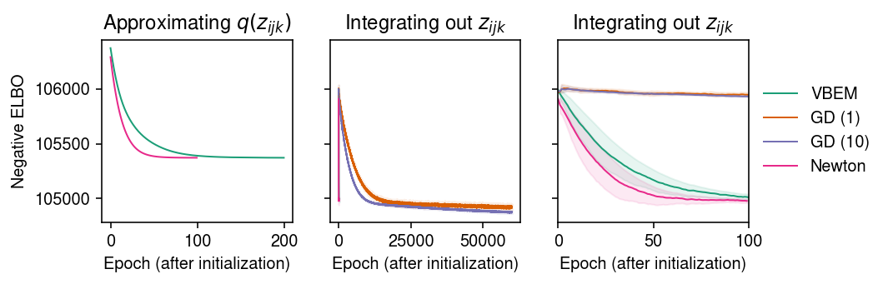
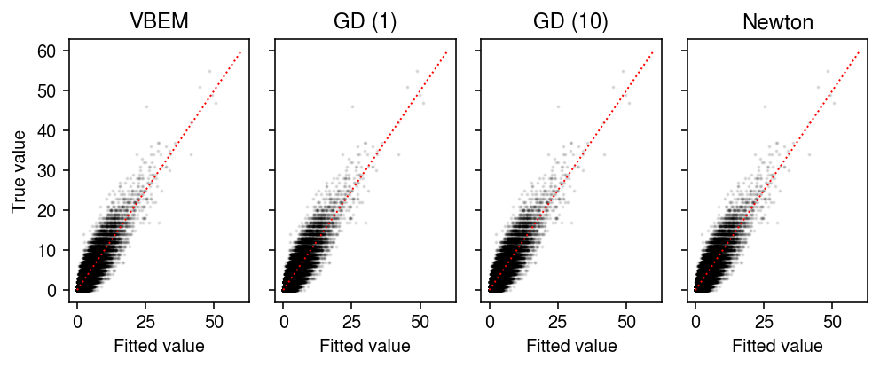

Hierarchical PMF
Table of Contents
Introduction
Consider the model \( \DeclareMathOperator\E{E} \DeclareMathOperator\Gam{Gamma} \DeclareMathOperator\KL{\mathcal{KL}} \DeclareMathOperator\Mult{Multinomial} \DeclareMathOperator\Pois{Poisson} \newcommand\mf{\mathbf{F}} \newcommand\ml{\mathbf{L}} \newcommand\mx{\mathbf{X}} \newcommand\va{\mathbf{a}} \newcommand\vb{\mathbf{b}} \newcommand\vs{\mathbf{s}} \)
\begin{align} x_{ij} \mid \lambda_{ij} &\sim \Pois(\lambda_{ij})\\ \lambda_{ij} &= (\ml\mf')_{ij}\\ l_{ik} &\sim \Gam(a_{lk}, b_{lk})\\ f_{jk} &\sim \Gam(a_{fk}, b_{fk}), \end{align}where the Gamma distributions are parameterized by shape and rate. Levitin et al. 2019 considered a variation of this model to model scRNA-seq data. One can use VBEM to estimate the posterior \(p(\ml, \mf \mid \mx, \va_l, \vb_l, \va_f, \vb_f)\) (Cemgil 2009). Here, we investigate alternative methods that do not rely on EM.
Setup
import numpy as np import pandas as pd import torch
%matplotlib inline %config InlineBackend.figure_formats = set(['retina'])
import matplotlib.pyplot as plt plt.rcParams['figure.facecolor'] = 'w' plt.rcParams['font.family'] = 'Nimbus Sans'
Methods
VBEM
Consider the augmented model (Cemgil 2009)
\begin{align} x_{ij} &= \sum_{k=1}^K z_{ijk}\\ z_{ijk} \mid l_{ik}, f_{jk} &\sim \Pois(l_{ik} f_{jk})\\ l_{ik} &\sim \Gam(a_{lk}, b_{lk})\\ f_{jk} &\sim \Gam(a_{fk}, b_{fk}). \end{align}VBEM updates for the variational parameters are analytic
\begin{align} q(z_{ij1}, \ldots, z_{ijK}) &= \Mult(x_{ij}, \pi_{ij1}, \ldots, \pi_{ijK})\\ \pi_{ijk} &\propto \exp(\E[\ln l_{ik}] + \E[\ln f_{jk}])\\ q(l_{ik}) &= \Gam(\textstyle \sum_j \E[z_{ijk}] + a_{lk}, \sum_j \E[f_{jk}] + b_{lk})\\ &\triangleq \Gam(\alpha_{lik}, \beta_{lik})\\ q(f_{jk}) &= \Gam(\textstyle \sum_i \E[z_{ijk}] + a_{fk}, \sum_i \E[l_{ik}] + b_{fk})\\ &\triangleq \Gam(\alpha_{fjk}, \beta_{fjk}), \end{align}where the expectations
\begin{align} \E[z_{ijk}] &= x_{ij} \pi_{ijk}\\ \E[l_{ik}] &= \alpha_{lik} / \beta_{lik}\\ \E[\ln l_{ik}] &= \psi(\alpha_{lik}) - \ln \beta_{lik}\\ \E[f_{jk}] &= \alpha_{fjk} / \beta_{fjk}\\ \E[\ln f_{jk}] &= \psi(\alpha_{fjk}) - \ln \beta_{fjk}, \end{align}and \(\psi\) denotes the digamma function. The ELBO
\begin{multline} \ell = \sum_{i, j} \left[ \sum_k \Big[ \E[z_{ijk}] (\E[\ln l_{ik}] + \E[\ln f_{jk}] - \ln \pi_{ijk}) - \E[l_{ik}]\E[f_{jk}] \Big] - \ln\Gamma(x_{ij} + 1)\right]\\ + \sum_{i, k} \left[ (a_{lk} - \alpha_{lik}) \E[\ln l_{ik}] - (b_{lk} - \beta_{lik}) \E[l_{ik}] + a_{lk} \ln b_{lk} - \alpha_{lik} \ln \beta_{lik} - \ln\Gamma(a_{lk}) + \ln\Gamma(\alpha_{lik})\right]\\ + \sum_{j, k} \left[ (a_{fk} - \alpha_{fjk}) \E[\ln f_{jk}] - (b_{fk} - \beta_{fjk}) \E[f_{jk}] + a_{fk} \ln b_{fk} - \alpha_{fjk} \ln \beta_{fjk} - \ln\Gamma(a_{fk}) + \ln\Gamma(\alpha_{fjk})\right]. \end{multline}Letting \(t_{ij} \triangleq \sum_k \exp(\E[\ln l_{ik}] + \E[\ln f_{jk}])\), and plugging in \(\E[z_{ijk}], \pi_{ijk}\),
\begin{gather} \sum_{i, j, k} \E[z_{ijk}] (\E[\ln l_{ik}] + \E[\ln f_{jk}] - \ln \pi_{ijk}) = \sum_{i, j} x_{ij} \ln t_{ij}\\ \sum_i \E[z_{ijk}] = \exp(\E[\ln f_{jk}]) \sum_i \frac{x_{ij}}{t_{ij}} \exp(\E[\ln l_{ik}])\\ \sum_j \E[z_{ijk}] = \exp(\E[\ln l_{ik}]) \sum_j \frac{x_{ij}}{t_{ij}} \exp(\E[\ln f_{jk}]). \end{gather}Updates for \(b_{lk}, b_{fk}\) are analytic:
\begin{align} \frac{\partial \ell}{\partial b_{lk}} &= \frac{a_{lk}}{b_{lk}} - \sum_{i} \E[l_{ik}] = 0\\ b_{lk} &:= \frac{a_{lk}}{\sum_{i} \E[l_{ik}]}\\ \frac{\partial \ell}{\partial b_{fk}} &= \frac{a_{fk}}{b_{fk}} - \sum_{j} \E[f_{jk}] = 0\\ b_{fk} &:= \frac{a_{fk}}{\sum_{j} \E[f_{jk}]}, \end{align}as are gradients for \(a_{lk}, a_{fk}\):
\begin{align} \frac{\partial \ell}{\partial a_{lk}} &= \sum_{i} \E[\ln l_{ik}] + \ln b_{lk} - \psi(a_{lk})\\ \frac{\partial^2 \ell}{\partial a_{lk}^2} &= \psi^{(1)}(a_{lk})\\ \frac{\partial \ell}{\partial a_{fk}} &= \sum_{j} \E[\ln f_{jk}] + \ln b_{fk} - \psi(a_{fk})\\ \frac{\partial^2 \ell}{\partial a_{fk}^2} &= \psi^{(1)}(a_{fk}), \end{align}where \(\psi^{(1)}\) denotes the trigamma function.
class PMFVBEM(torch.nn.Module): def __init__(self, n, p, k): super().__init__() self.alpha_l = torch.nn.Parameter(torch.exp(torch.randn([n, k]))) self.beta_l = torch.nn.Parameter(torch.exp(torch.randn([n, k]))) self.alpha_f = torch.nn.Parameter(torch.exp(torch.randn([p, k]))) self.beta_f = torch.nn.Parameter(torch.exp(torch.randn([p, k]))) self.a_l = torch.nn.Parameter(torch.ones([1, k])) self.b_l = torch.nn.Parameter(torch.ones([1, k])) self.a_f = torch.nn.Parameter(torch.ones([1, k])) self.b_f = torch.nn.Parameter(torch.ones([1, k])) @torch.no_grad() def elbo(self, x): """ELBO wrt q(l_{ik}) q(f_{jk}), i.e. integrating out z_{ijk}""" q_l = torch.distributions.Gamma(self.alpha_l, self.beta_l) q_f = torch.distributions.Gamma(self.alpha_f, self.beta_f) kl_l = torch.distributions.kl.kl_divergence(q_l, torch.distributions.Gamma(self.a_l, self.b_l)).sum() kl_f = torch.distributions.kl.kl_divergence(q_f, torch.distributions.Gamma(self.a_f, self.b_f)).sum() # TODO: multiple samples? l = q_l.rsample() f = q_f.rsample() err = torch.distributions.Poisson(l @ f.T).log_prob(x).sum() elbo = err - kl_l - kl_f return elbo @torch.no_grad() def elbo_z(self, x, pm_l, exp_pm_ln_l, pm_f, exp_pm_ln_f): """ELBO wrt q(l_{ik}) q(f_{jk}) q(z_{ijk})""" temp = exp_pm_ln_l @ exp_pm_ln_f.T ret = (x * torch.log(temp) - pm_l @ pm_f.T - torch.lgamma(x + 1)).sum() ret += ((self.a_l - self.alpha_l) * torch.log(exp_pm_ln_l) - (self.b_l - self.beta_l) * pm_l + self.a_l * torch.log(self.b_l) - self.alpha_l * torch.log(self.beta_l) - torch.lgamma(self.a_l) + torch.lgamma(self.alpha_l)).sum() ret += ((self.a_f - self.alpha_f) * torch.log(exp_pm_ln_f) - (self.b_f - self.beta_f) * pm_f + self.a_f * torch.log(self.b_f) - self.alpha_f * torch.log(self.beta_f) - torch.lgamma(self.a_f) + torch.lgamma(self.alpha_f)).sum() assert ret <= 0 return ret @torch.no_grad() def _pm(self): pm_l = (self.alpha_l / self.beta_l) exp_pm_ln_l = torch.exp(torch.digamma(self.alpha_l) - torch.log(self.beta_l)) pm_f = (self.alpha_f / self.beta_f) exp_pm_ln_f = torch.exp(torch.digamma(self.alpha_f) - torch.log(self.beta_f)) return pm_l, exp_pm_ln_l, pm_f, exp_pm_ln_f @torch.no_grad() def fit(self, x, num_epochs): self.trace = [] for i in range(num_epochs): pm_l, exp_pm_ln_l, pm_f, exp_pm_ln_f = self._pm() self.trace.append(-self.elbo(x).cpu().numpy()) # Cemgil 2009, Alg. 1 # Important: this optimizes elbo_z, not elbo temp = x / (exp_pm_ln_l @ exp_pm_ln_f.T) self.alpha_l.data = exp_pm_ln_l * (temp @ exp_pm_ln_f) + self.a_l self.beta_l.data = pm_f.sum(dim=0) + self.b_l self.alpha_f.data = exp_pm_ln_f * (exp_pm_ln_l.T @ temp).T + self.a_f self.beta_f.data = pm_l.sum(dim=0) + self.b_f # TODO: Hyperparameter updates return self
Newton-Raphson
Alternatively, one could plug in \(\E[z_{ijk}], \pi_{ijk}\) and then optimize the ELBO with respect to \(\alpha_{lik}, \beta_{lik}, \alpha_{fjk}, \beta_{fjk}, a_{lk}, b_{lk}, a_{fk}, b_{fk}\) using one-dimensional Newton-Raphson updates. To prototype this approach, we use automatic differentiation to get the first and second derivatives.
class PMFN(torch.nn.Module): def __init__(self, n, p, k): super().__init__() self.alpha_l = torch.nn.Parameter(torch.exp(torch.randn([n, k]))) self.beta_l = torch.nn.Parameter(torch.exp(torch.randn([n, k]))) self.alpha_f = torch.nn.Parameter(torch.exp(torch.randn([p, k]))) self.beta_f = torch.nn.Parameter(torch.exp(torch.randn([p, k]))) self.a_l = torch.nn.Parameter(torch.ones([1, k])) self.b_l = torch.nn.Parameter(torch.ones([1, k])) self.a_f = torch.nn.Parameter(torch.ones([1, k])) self.b_f = torch.nn.Parameter(torch.ones([1, k])) @torch.no_grad() def elbo(self, x): q_l = torch.distributions.Gamma(self.alpha_l, self.beta_l) q_f = torch.distributions.Gamma(self.alpha_f, self.beta_f) kl_l = torch.distributions.kl.kl_divergence(q_l, torch.distributions.Gamma(self.a_l, self.b_l)).sum() kl_f = torch.distributions.kl.kl_divergence(q_f, torch.distributions.Gamma(self.a_f, self.b_f)).sum() # TODO: multiple samples? l = q_l.rsample() f = q_f.rsample() err = torch.distributions.Poisson(l @ f.T).log_prob(x).sum() elbo = err - kl_l - kl_f return elbo def elbo_z(self, x): pm_l = (self.alpha_l / self.beta_l) exp_pm_ln_l = torch.exp(torch.digamma(self.alpha_l) - torch.log(self.beta_l)) pm_f = (self.alpha_f / self.beta_f) exp_pm_ln_f = torch.exp(torch.digamma(self.alpha_f) - torch.log(self.beta_f)) temp = exp_pm_ln_l @ exp_pm_ln_f.T ret = (x * torch.log(temp) - pm_l @ pm_f.T - torch.lgamma(x + 1)).sum() ret += ((self.a_l - self.alpha_l) * torch.log(exp_pm_ln_l) - (self.b_l - self.beta_l) * pm_l + self.a_l * torch.log(self.b_l) - self.alpha_l * torch.log(self.beta_l) - torch.lgamma(self.a_l) + torch.lgamma(self.alpha_l)).sum() ret += ((self.a_f - self.alpha_f) * torch.log(exp_pm_ln_f) - (self.b_f - self.beta_f) * pm_f + self.a_f * torch.log(self.b_f) - self.alpha_f * torch.log(self.beta_f) - torch.lgamma(self.a_f) + torch.lgamma(self.alpha_f)).sum() assert not torch.isnan(ret) assert torch.isfinite(ret) assert ret <= 0 return ret def _update(self, x, par, step=1, eps=1e-15): """Newton-Raphon update""" for i in range(par.shape[0]): for k in range(par.shape[1]): # Important: this optimizes elbo_z, not elbo d = torch.autograd.grad(self.elbo_z(x), par, create_graph=True)[0] d2 = torch.autograd.grad(d[i,k], par)[0] with torch.no_grad(): par.data[i,k] -= step * d[i,k] / (d2[i,k] + eps) par.data[i,k] = torch.clamp(par.data[i,k], min=eps) def fit(self, x, num_epochs, step=1): self.trace = [-self.elbo(x).cpu().numpy()] for t in range(num_epochs): # TODO: update order probably matters for par in self.parameters(): if par.requires_grad: self._update(x, par, step=step) self.trace.append(-self.elbo(x).cpu().numpy()) return self
Pathwise gradient
In the original model, the ELBO
\begin{equation} \ell = \sum_{i,j} \E[\ln p(x_{ij} \mid \ml, \mf)] - \KL(q(\ml) \Vert p(\ml)) - \KL(q(\mf) \Vert p(\mf)). \end{equation}The KL terms are analytic; however, the first expectation is not (unlike for the approach described above, which made a variational approximation on \(z\)). In this case, one can still optimize the ELBO using the pathwise gradient (reviewed by Mohamed et al. 2020) and gradient descent. Briefly,
class PMF(torch.nn.Module): def __init__(self, n, p, k): super().__init__() self.alpha_l = torch.nn.Parameter(torch.exp(torch.randn([n, k]))) self.beta_l = torch.nn.Parameter(torch.exp(torch.randn([n, k]))) self.alpha_f = torch.nn.Parameter(torch.exp(torch.randn([p, k]))) self.beta_f = torch.nn.Parameter(torch.exp(torch.randn([p, k]))) self.a_l = torch.nn.Parameter(torch.ones([1, k])) self.b_l = torch.nn.Parameter(torch.ones([1, k])) self.a_f = torch.nn.Parameter(torch.ones([1, k])) self.b_f = torch.nn.Parameter(torch.ones([1, k])) def forward(self, x): q_l = torch.distributions.Gamma(self.alpha_l, self.beta_l) q_f = torch.distributions.Gamma(self.alpha_f, self.beta_f) kl_l = torch.distributions.kl.kl_divergence(q_l, torch.distributions.Gamma(self.a_l, self.b_l)).sum() kl_f = torch.distributions.kl.kl_divergence(q_f, torch.distributions.Gamma(self.a_f, self.b_f)).sum() # TODO: multiple samples? l = q_l.rsample() f = q_f.rsample() err = torch.distributions.Poisson(l @ f.T).log_prob(x).sum() elbo = err - kl_l - kl_f return -elbo def fit(self, x, num_epochs, **kwargs): self.trace = [] opt = torch.optim.Adam(self.parameters(), **kwargs) for i in range(num_epochs): opt.zero_grad() loss = self.forward(x) self.trace.append(loss.detach().cpu().numpy()) loss.backward() opt.step() return self
Results
Simulated example
Simulate from the model.
rng = np.random.default_rng(1) n = 200 p = 300 K = 3 a_l = 1 b_l = 1 a_f = 1 b_f = 1 l = rng.gamma(a_l, b_l, size=(n, K)) f = rng.gamma(a_f, b_f, size=(p, K)) x = rng.poisson(l @ f.T) xt = torch.tensor(x, dtype=torch.float, device='cuda')
To initialize all methods, run 500 epochs of VBEM. For simplicity, fix the hyperparameters to the oracle values.
# Important: VBEM is randomly initialized torch.manual_seed(1) init_epochs = 500 m0 = PMFVBEM(n, p, K).cuda().fit(xt, num_epochs=init_epochs)
Starting from the same initialization, compare VBEM and Newton-Raphson (which optimize the ELBO eq. 20-21) and gradient descent (which optimizes the ELBO eq. 32). For each method, trace the ELBO estimated according to eq. 32.
num_epochs = 4000 # Continue VBEM updates m1 = PMFVBEM(n, p, K).cuda() with torch.no_grad(): m1.alpha_l.data = m0.alpha_l.clone() m1.beta_l.data = m0.beta_l.clone() m1.alpha_f.data = m0.alpha_f.clone() m1.beta_f.data = m0.beta_f.clone() m1.fit(xt, num_epochs=num_epochs) # Important: GD is stochastic torch.manual_seed(2) m2 = PMF(n, p, K).cuda() with torch.no_grad(): m2.alpha_l.data = m0.alpha_l.clone() m2.beta_l.data = m0.beta_l.clone() m2.alpha_f.data = m0.alpha_f.clone() m2.beta_f.data = m0.beta_f.clone() m2.a_l.requires_grad = False m2.b_l.requires_grad = False m2.a_f.requires_grad = False m2.b_f.requires_grad = False m2.fit(xt, num_epochs=4000, lr=1e-2) m3 = PMFN(n, p, K).cuda() with torch.no_grad(): m3.alpha_l.data = m0.alpha_l.clone() m3.beta_l.data = m0.beta_l.clone() m3.alpha_f.data = m0.alpha_f.clone() m3.beta_f.data = m0.beta_f.clone() m3.a_l.requires_grad = False m3.b_l.requires_grad = False m3.a_f.requires_grad = False m3.b_f.requires_grad = False # TODO: why does this blow up for step=1? m3.fit(xt, num_epochs=100, step=1e-2)
PMFN()
Look at the ELBO achieved by the algorithms.
cm = plt.get_cmap('Dark2') plt.clf() plt.gcf().set_size_inches(5, 2.5) plt.yscale('log') plt.plot(pd.Series(m0.trace).ewm(alpha=0.1).mean(), c=cm(0), lw=1, marker=None, label='Initialization') for i, (model, name) in enumerate(zip((m1, m2, m3), ('VBEM', 'Grad', 'Newton'))): plt.plot(np.arange(init_epochs, init_epochs + len(model.trace)), pd.Series(model.trace).ewm(alpha=0.1).mean(), c=cm(i + 1), lw=1, marker=None, label=name) plt.legend(frameon=False, loc='center left', bbox_to_anchor=(1, .5)) plt.ylim(1.045e5, 1.12e5) plt.xlabel('Epoch') plt.ylabel('Negative ELBO\n(smoothed)') plt.tight_layout()

Report the final (approximate) ELBO.
{'VBEM': np.array(m1.trace[-10:]).mean(),
'GD': np.array(m2.trace[-10:]).mean(),
'Newton': np.array(m3.trace[-10:]).mean()}
{'VBEM': 104987.02, 'GD': 104994.67, 'Newton': 104972.0}
Compare the fitted values of each approach to the observed values.
plt.clf() fig, ax = plt.subplots(1, 3, sharey=True) fig.set_size_inches(7, 3) for a, model in zip(ax, (m1, m2, m3)): with torch.no_grad(): pm = ((model.alpha_l / model.beta_l) @ (model.alpha_f / model.beta_f).T).cpu() a.scatter(pm.ravel(), x.ravel(), s=1, alpha=0.1, c='k') lim = [0, 60] for a, title in zip(ax, ['VBEM', 'Grad', 'Newton']): a.plot(lim, lim, c='r', lw=1, ls=':') a.set_xlabel('Fitted value') a.set_title(title) ax[0].set_ylabel('True value') fig.tight_layout()
